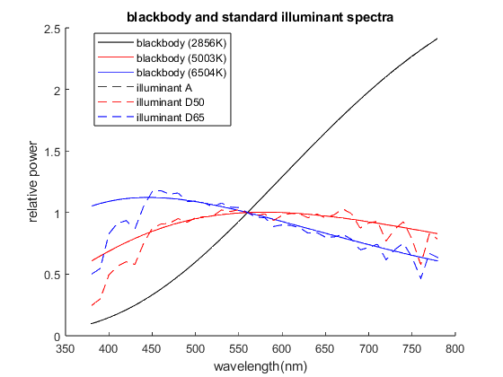

Project 3 Report
Team 5: Shakira Garnett, Hridiza Roy
Contents
start clean
clear all; close all; clc;
step 2a
% load the CIE observer and illuminant data
cie = loadCIEdata;
step 2b
Include listing of loadCIEdata
function [cie] = loadCIEdata data2deg = load('../color_toolbox/CIE_2Deg_380-780-5nm.txt'); cie.lambda = data2deg(:, 1); % Wavelengths (81x1 column vector) cie.cmf2deg = data2deg(:, 2:4); % 2-degree CMF (81x3 array) data10deg = load('../color_toolbox/CIE_10Deg_380-780-5nm.txt'); cie.cmf10deg = data10deg(:, 2:4); % 10-degree CMF (81x3 array) dataIllA = load('../color_toolbox/CIE_IllA_380-780-5nm.txt'); cie.illA = dataIllA(:, 2); % Illuminant A (81x1 column vector) dataIllC = load('../color_toolbox/CIE_IllC_380-780-5nm.txt'); cie.illC = dataIllC(:, 2); % Illuminant C (81x1 column vector) dataIllD50 = load('../color_toolbox/CIE_IllD50_380-780-5nm.txt'); cie.illD50 = dataIllD50(:, 2); % Illuminant D50 (81x1 column vector) dataIllD65 = load('../color_toolbox/CIE_IllD65_380-780-5nm.txt'); cie.illD65 = dataIllD65(:, 2); % Illuminant D65 (81x1 column vector) % Create illuminant E with a constant value of 100 cie.illE = 100 * ones(81, 1); % Illuminant E (81x1 column vector) dataIllF = load('../color_toolbox/CIE_IllF_1-12_380-780-5nm.txt'); cie.illF = dataIllF(:, 2:end); % Illuminant F1-F12 (81x12 array) % Create PRD with a constant value of 1 cie.PRD = ones(81, 1); % PRD (81x1 column vector) end
step 3
test loadCIEdata by ploting illA, D50, and D65 vs. the blackbody curves
bb_2856 = blackbody(2856,cie.lambda); bb_5003 = blackbody(5003,cie.lambda); bb_6504 = blackbody(6504,cie.lambda); figure(1); hold on; plot(cie.lambda,bb_2856,'k', cie.lambda,bb_5003,'r', cie.lambda,bb_6504,'b', ... cie.lambda,(cie.illA / 100),'--k', cie.lambda,(cie.illD50 / 100),'--r', ... cie.lambda,(cie.illD65 / 100),'--b'); legend('blackbody (2856K)', 'blackbody (5003K)', 'blackbody (6504K)', ... 'illuminant A', 'illuminant D50', 'illuminant D65', 'Location','best'); title('blackbody and standard illuminant spectra'); xlabel('wavelength(nm)'); ylabel('relative power'); figure(2); hold on; plot(cie.lambda,cie.cmf2deg(:,1,:),'r', cie.lambda,cie.cmf2deg(:,2,:),'g', ... cie.lambda,cie.cmf2deg(:,3,:),'b', cie.lambda,cie.cmf10deg(:,1,:),'--r',... cie.lambda,cie.cmf10deg(:,2,:),'--g', cie.lambda,cie.cmf10deg(:,3,:),'--b'); legend('x_b_a_r 2 deg', 'y_b_a_r 2 deg', 'z_b_a_r 2 deg', 'x_b_a_r 10 deg', ... 'y_b_a_r 10 deg', 'z_b_a_r 10 deg', 'Location','best'); title('CIE standard observer CMFs'); xlabel('wavelength(nm)'); ylabel('tristimulus values'); % do this for the rest of the data
step 4
create ref2XYZ in the file ref2XYZ.m
function XYZ = ref2XYZ(ref,cmfs,ill); % simple version of ref2XYZ that doesn't use matrix mults %compute normalizing constant for the illuminant k = 100./sum(cmfs(:,2).*ill); %compute the XYZs X = k.*sum(cmfs(:,1).*ill.*ref); Y = k.*sum(cmfs(:,2).*ill.*ref); Z = k.*sum(cmfs(:,3).*ill.*ref); % return them in a 3xn array XYZ = [X;Y;Z]; end
step 5
test ref2XYZ
CC_spectra = importdata('ColorChecker_380_780_5nm.txt'); for patch_num = 2:25 CC_XYZs(:,patch_num-1) = ref2XYZ(CC_spectra(:,patch_num),cie.cmf2deg,cie.illD65); end CC_XYZs
CC_XYZs =
Columns 1 through 7
11.5145 39.1346 18.3488 11.1492 25.8437 31.7110 37.1457
10.3819 36.5981 19.6332 13.8551 24.3868 43.8600 29.5592
7.1502 27.0564 35.6470 7.4267 45.6142 44.8778 6.5006
Columns 8 through 14
13.8627 29.1328 8.5889 33.9174 46.1864 8.9183 15.0353
12.3179 19.8475 6.4569 44.1533 42.4957 6.4177 24.1079
39.3093 14.9941 15.4745 11.4297 8.6771 32.2736 9.6379
Columns 15 through 21
19.3447 55.8457 29.6768 14.4138 87.8402 57.9621 35.2286
11.3576 58.9726 19.3515 19.9750 92.3781 61.0426 37.0414
5.5526 9.6411 32.2626 39.0008 95.6125 65.4909 40.2256
Columns 22 through 24
19.3492 8.7646 3.2111
20.4708 9.2915 3.3763
22.1545 10.3188 3.9312
step 6
create XYZ2xyY in the file XYZ2xyY.m
function xyY = XYZ2xyY(XYZ) % Split the matrix into corresponding row vectors X = XYZ(1,:,:); Y = XYZ(2,:,:); Z = XYZ(3,:,:); % calculate chromaticitity coords x = X ./ (X + Y + Z); y = Y ./ (X + Y + Z); % reconstruct & return xyY matrix xyY = [x;y;Y]; end
step 7
test XYZ2xyY
CC_xyYs = XYZ2xyY(CC_XYZs)
CC_xyYs =
Columns 1 through 7
0.3964 0.3807 0.2492 0.3438 0.2696 0.2633 0.5074
0.3574 0.3561 0.2667 0.4272 0.2544 0.3641 0.4038
10.3819 36.5981 19.6332 13.8551 24.3868 43.8600 29.5592
Columns 8 through 14
0.2117 0.4554 0.2814 0.3790 0.4744 0.1873 0.3082
0.1881 0.3102 0.2116 0.4933 0.4365 0.1348 0.4942
12.3179 19.8475 6.4569 44.1533 42.4957 6.4177 24.1079
Columns 15 through 21
0.5336 0.4487 0.3651 0.1964 0.3185 0.3142 0.3132
0.3133 0.4738 0.2381 0.2722 0.3349 0.3309 0.3293
11.3576 58.9726 19.3515 19.9750 92.3781 61.0426 37.0414
Columns 22 through 24
0.3122 0.3089 0.3053
0.3303 0.3275 0.3210
20.4708 9.2915 3.3763
step 8
load the spectral data for the color patches
% define ColorMunki/Argyll/spotread measurement wavelengths cm_lams = 380:10:730; cm_h_offset_im = 18; cm_h_offset_r = 19; % load and normalize the measured spectral data for the patch #1 data = importdata('1.1_real.sp', ' ', cm_h_offset_r); real_11 = data.data/100; data = importdata('1.1_imaged.sp', ' ', cm_h_offset_im); imaged_11 = data.data/100; data = importdata('1.1_matching.sp', ' ', cm_h_offset_im); matching_11 = data.data/100; % repeat for patch #2 data = importdata('1.2_real.sp', ' ', cm_h_offset_r); real_12 = data.data/100; data = importdata('1.2_imaged.sp', ' ', cm_h_offset_im); imaged_12 = data.data/100; data = importdata('1.2_matching.sp', ' ', cm_h_offset_im); matching_12 = data.data/100;
step 9
interpolate and plot the original and interpolated data
% interpolate/extrapolate the CM spectral data to 380-780, 5nm % Patch #1 real_11i = interp1(cm_lams, real_11, cie.lambda, 'linear', 'extrap'); imaged_11i = interp1(cm_lams, imaged_11, cie.lambda, 'linear', 'extrap'); matching_11i = interp1(cm_lams, matching_11, cie.lambda, 'linear', 'extrap'); % Patch #2 real_12i = interp1(cm_lams, real_12, cie.lambda, 'linear', 'extrap'); imaged_12i = interp1(cm_lams, imaged_12, cie.lambda, 'linear', 'extrap'); matching_12i = interp1(cm_lams, matching_12, cie.lambda, 'linear', 'extrap'); % create a figure for patch #1 that confirms the process figure; hold on; plot(cm_lams, real_11, 'ro', 'DisplayName', 'real measured'); plot(cm_lams, imaged_11, 'go', 'DisplayName', 'imaged measured'); plot(cm_lams, matching_11, 'bo', 'DisplayName', 'matching measured'); plot(cie.lambda, real_11i, 'r--', 'DisplayName', 'real interpolated'); plot(cie.lambda, imaged_11i, 'g--', 'DisplayName', 'imaged interpolated'); plot(cie.lambda, matching_11i, 'b--', 'DisplayName', 'matching interpolated'); title('Patch 1.1 Measured and Interpolated Spectra'); xlabel('Wavelength (nm)'); ylabel('Reflectance Factor'); legend('Location', 'best');; grid on; xlim([380 780]); ylim([0 1]); % Figure for patch 2 figure; hold on; plot(cm_lams, real_12, 'ro', 'DisplayName', 'real measured'); plot(cm_lams, imaged_12, 'go', 'DisplayName', 'imaged measured'); plot(cm_lams, matching_12, 'bo', 'DisplayName', 'matching measured'); plot(cie.lambda, real_12i, 'r--', 'DisplayName', 'real interpolated'); plot(cie.lambda, imaged_12i, 'g--', 'DisplayName', 'imaged interpolated'); plot(cie.lambda, matching_12i, 'b--', 'DisplayName', 'matching interpolated'); title('Patch 1.2 Measured and Interpolated Spectra'); xlabel('Wavelength (nm)'); ylabel('Reflectance Factor'); legend('Location', 'best'); grid on; xlim([380 780]); ylim([0 1]);
step 10
load the measured XYZ data for the patches, calculate XYZs from the interpolated spectra and print a table comparing the results
% load and extract the CM measured XYZs real = importdata('1_XYZ_Labs_real.txt'); imaged = importdata('1_XYZ_Labs_imaged.txt'); matching = importdata('1_XYZ_Labs_matching.txt'); XYZmeas.real_11 = real.data(1,2:4)'; XYZmeas.imaged_11 = imaged.data(1,2:4)'; XYZmeas.matching_11 = matching.data(1,2:4)'; XYZmeas.real_12 = real.data(2,2:4)'; XYZmeas.imaged_12 = imaged.data(2,2:4)'; XYZmeas.matching_12 = matching.data(2,2:4)'; % calculate the XYZs from the spectral data XYZcalc.real_11 = ref2XYZ(real_11i,cie.cmf2deg,cie.illD50); XYZcalc.imaged_11 = ref2XYZ(imaged_11i,cie.cmf2deg,cie.illD50); XYZcalc.matching_11 = ref2XYZ(matching_11i,cie.cmf2deg,cie.illD50); XYZcalc.real_12 = ref2XYZ(real_12i,cie.cmf2deg,cie.illD50); XYZcalc.imaged_12 = ref2XYZ(imaged_12i,cie.cmf2deg,cie.illD50); XYZcalc.matching_12 = ref2XYZ(matching_12i,cie.cmf2deg,cie.illD50); % print formatted tables of measured and calculated XYZs for the color patches fprintf('Measured and calculated tristimulus values\n\n'); fprintf('\t\t\t patch 1.1\n'); fprintf('\t\tmeasured\t\tcalculated\n'); fprintf('\t X\t\tY\tZ\tX\tY\t Z\n'); fprintf('%8s% 9.4f% 9.4f% 9.4f% 9.4f% 9.4f% 9.4f\n', 'real', ... XYZmeas.real_11', XYZcalc.real_11'); fprintf('%8s% 9.4f% 9.4f% 9.4f% 9.4f% 9.4f% 9.4f\n', 'imaged', ... XYZmeas.imaged_11', XYZcalc.imaged_11'); fprintf('%8s% 9.4f% 9.4f% 9.4f% 9.4f% 9.4f% 9.4f\n', 'matching', ... XYZmeas.matching_11', XYZcalc.matching_11'); fprintf('\n\n'); fprintf('\t\t\t patch 1.2\n'); fprintf('\t\tmeasured\t\tcalculated\n'); fprintf('\t X\t\tY\tZ\tX\tY\t Z\n'); fprintf('%8s% 9.4f% 9.4f% 9.4f% 9.4f% 9.4f% 9.4f\n', 'real', ... XYZmeas.real_12', XYZcalc.real_12'); fprintf('%8s% 9.4f% 9.4f% 9.4f% 9.4f% 9.4f% 9.4f\n', 'imaged', ... XYZmeas.imaged_12', XYZcalc.imaged_12'); fprintf('%8s% 9.4f% 9.4f% 9.4f% 9.4f% 9.4f% 9.4f\n', 'matching', ... XYZmeas.matching_12', XYZcalc.matching_12');
Measured and calculated tristimulus values
patch 1.1
measured calculated
X Y Z X Y Z
real 73.4334 75.6109 58.5145 73.4272 75.6094 58.5257
imaged 85.7940 88.8586 66.3455 85.7827 88.8525 66.3528
matching 92.4689 95.0103 79.3535 92.4571 95.0145 79.3425
patch 1.2
measured calculated
X Y Z X Y Z
real 24.7947 27.7476 18.9882 24.7922 27.7377 18.9920
imaged 24.1535 26.1929 18.7744 24.1542 26.1875 18.7918
matching 40.3188 46.0387 26.3228 40.3173 46.0177 26.3524
step 11
calculate measured and calculated xyYs and print a table comparing the results
% calculate the xyYs from the CM measured XYZs xyYmeas.real_11 = XYZ2xyY(XYZmeas.real_11); xyYmeas.imaged_11 = XYZ2xyY(XYZmeas.imaged_11); xyYmeas.matching_11 = XYZ2xyY(XYZmeas.matching_11); xyYmeas.real_12 = XYZ2xyY(XYZmeas.real_12); xyYmeas.imaged_12 = XYZ2xyY(XYZmeas.imaged_12); xyYmeas.matching_12 = XYZ2xyY(XYZmeas.matching_12); xyYcalc.real_11 = XYZ2xyY(XYZcalc.real_11); xyYcalc.imaged_11 = XYZ2xyY(XYZcalc.imaged_11); xyYcalc.matching_11 = XYZ2xyY(XYZcalc.matching_11); xyYcalc.real_12 = XYZ2xyY(XYZcalc.real_12); xyYcalc.imaged_12 = XYZ2xyY(XYZcalc.imaged_12); xyYcalc.matching_12 = XYZ2xyY(XYZcalc.matching_12); % print formatted tables of measured and calculated xyYs for the color patches fprintf('\n\nMeasured and calculated chromaticity coordinates\n\n'); fprintf('\t\t\t patch 1.1\n'); fprintf('\t\tmeasured\t\tcalculated\n'); fprintf('\t x\t\ty\tY\tx\ty\t Y\n'); fprintf('%8s% 9.4f% 9.4f% 9.4f% 9.4f% 9.4f% 9.4f\n', 'real', ... xyYmeas.real_11', xyYcalc.real_11'); fprintf('%8s% 9.4f% 9.4f% 9.4f% 9.4f% 9.4f% 9.4f\n', 'imaged', ... xyYmeas.imaged_11', xyYcalc.imaged_11'); fprintf('%8s% 9.4f% 9.4f% 9.4f% 9.4f% 9.4f% 9.4f\n', 'matching', ... xyYmeas.matching_11', xyYcalc.matching_11'); fprintf('\n\n'); fprintf('\t\t\t patch 1.2\n'); fprintf('\t\tmeasured\t\tcalculated\n'); fprintf('\t x\t\ty\tY\tx\ty\t Y\n'); fprintf('%8s% 9.4f% 9.4f% 9.4f% 9.4f% 9.4f% 9.4f\n', 'real', ... xyYmeas.real_12', xyYcalc.real_12'); fprintf('%8s% 9.4f% 9.4f% 9.4f% 9.4f% 9.4f% 9.4f\n', 'imaged', ... xyYmeas.imaged_12', xyYcalc.imaged_12'); fprintf('%8s% 9.4f% 9.4f% 9.4f% 9.4f% 9.4f% 9.4f\n', 'matching', ... xyYmeas.matching_12', xyYcalc.matching_12');
Measured and calculated chromaticity coordinates
patch 1.1
measured calculated
x y Y x y Y
real 0.3538 0.3643 75.6109 0.3538 0.3643 75.6094
imaged 0.3560 0.3687 88.8586 0.3560 0.3687 88.8525
matching 0.3465 0.3561 95.0103 0.3465 0.3561 95.0145
patch 1.2
measured calculated
x y Y x y Y
real 0.3466 0.3879 27.7476 0.3466 0.3878 27.7377
imaged 0.3494 0.3789 26.1929 0.3494 0.3788 26.1875
matching 0.3578 0.4086 46.0387 0.3578 0.4084 46.0177
step 12
plot the calculated chromaticity coordinates for the patches on a chromaticity diagram
% plot the chromaticity diagram skeleton plot_chrom_diag_skel; line_weight = 1.0; % plot the data for 1.1 x = xyYcalc.real_11(1); y = xyYcalc.real_11(2); h(1) = plot(x,y,'rs','LineWidth', line_weight); x = xyYcalc.imaged_11(1); y = xyYcalc.imaged_11(2); h(2) = plot(x,y,'rd','LineWidth', line_weight); x = xyYcalc.matching_11(1); y = xyYcalc.matching_11(2); h(3) = plot(x,y,'r+','LineWidth', line_weight); % plot the data for 1.2 x = xyYcalc.real_12(1); y = xyYcalc.real_12(2); h(4) = plot(x,y,'bs','LineWidth', line_weight); x = xyYcalc.imaged_12(1); y = xyYcalc.imaged_12(2); h(5) = plot(x,y,'bd','LineWidth', line_weight); x = xyYcalc.matching_12(1); y = xyYcalc.matching_12(2); h(6) = plot(x,y,'b+','LineWidth', line_weight); legend(h, '1.1 real','1.1 imaged', '1.1 matching',... '1.2 real','1.2 imaged', '1.2 matching','Location','best'); title('chromaticity coordinates of 1.1 and 1.2 patches');
feedback
i. Who did which parts
Shakira - parts 2, 3, 6, 7, 10
Hridiza - parts 4, 5, 8, 9, 11, 12, 13
ii. Problems
- The chromaticity plot has values that are very close together, which is making them hard to discern
- Formatting the tables was challenging
iii. Valuable parts
- Learning how to interpret and use the measured data to gain insights
iv. Improvements
- A section asking us to interpret the chromaticity coordinates might be beneficial